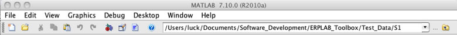

ERPLAB relies on EEGLAB for loading and displaying the EEG, and this page provides some useful information about using EEGLAB.
Loading EEG Data into EEGLAB
You will often start a data processing session by importing an EEG data file that was created by some data acquisition system or by opening a saved EEG file that was previously created in EEGLAB. This is accomplished with EEGLAB functions that are not a part of ERPLAB (see the EEGLAB documentation for details).
Hint: When you open or save files from within EEGLAB (including from within the ERPLAB), MATLAB's current directory will be the default location for the files. You can navigate anywhere in the file system to open or save files, but you will save a lot of time if you set MATLAB's current directory to the folder that contains the data you are currently processing. To do this, go to the top of the MATLAB window, where you will see a drop-down menu displaying your current directory (see screenshot below). Click on the browse button '…' next to the drop-down menu to change the current directory. Choose the folder that contains the data you want to work with. Note, however, the EEGLAB (but not ERPLAB) sometimes overrides this current directory, instead continuing to use the folder in which the previous dataset was found. You can turn off this EEGLAB behavior by going to File > Memory and other options and unselecting "If set, when browsing to open a new dataset assume the folder/directory of previous dataset."

Now you are ready to open a file. If you are opening an EEG file that was saved from a previous EEGLAB session, you can simply choose File > Load existing dataset from EEGLAB. The dataset will then be visible in the Dataset menu within EEGLAB.
If you are importing an EEG file for the first time into EEGLAB, choose File > Import Data. Choose the format of the data you want to import. In the browse window that appears, select the data file you wish to import and then click Open.
A window will probably appear asking you to fill in certain criteria depending on how much of your data you would like to import. These options may vary by data file type. We typically find that the default settings are appropriate (but our experience is largely limited to Biosemi and Neuroscan files). Please refer to EEGLAB documentation for further instructions on importing data, setting import criteria, and accessing old datasets.
Eventually, a window will appear that will ask you to name the dataset that you are importing and ask you if you would like to save this dataset as a file. You may choose to save this dataset if you would like to stop and continue working on this dataset at a later point. Not saving a dataset does not mean you will lose your original EEG data, because you will still have the original EEG data file. However, to avoid going through the importing process again, you will usually want to save the dataset you have created.
Hints About File Names, Datasets, Memory, and the Command Window
An Important Note about Datasets and the EEGLAB GUI. A dataset is simply an EEGLAB-format EEG file. Many datasets may be open at a given time within EEGLAB, but only one of them is "active" at a given time. That is, almost all operations that you will perform in EEGLAB and ERPLAB will operate on the currently active dataset. You can select which dataset is active from the Datasets menu. Many operations will create a new dataset, which then becomes the active dataset. For example, if you tell EEGLAB to run a filter, the filter will be applied to the active dataset, and this will create a new dataset that will now be the active dataset. In almost all cases, operations that create new datasets will give you the option of saving the dataset to a file. This is not mandatory, however. Thus, it is possible to create a dataset without saving it. This is convenient, because you can perform a sequence of operations without having to create a large number of files. However, it is very important to keep in mind that a dataset that has not been saved will be lost if you quit from EEGLAB or from MATLAB (or if your computer hangs, turns off, loses power, restarts, etc.).
Hints about Filenames. EEGLAB and ERPLAB allow you to give files any names that are allowed by your operating system and by Matlab. However, white space and special characters in file names can lead to unanticipated problems, especially if you transfer your files to a different operating system. We therefore suggest that you not use spaces in your file names (or folder names) and that you limit special characters to '_', '.', and '-' (underscore, period, and dash). For example, avoid file names such as 'my big $$$ file.txt' and instead use names such as 'my_big_money_file.txt'. Also, it is a good idea to use the suffix '.txt' for text files (especially in Windows, but also on other platforms). Averaged ERPs are stored on disk in Matlab's intrinsic binary file format (.mat). However, we recommend that you use the suffix .erp instead of .mat for these files. Similarly, EEGLAB dataset filenames typically have a .set suffix.
EEGLAB datasets have a name that is stored in the dataset structure and is used to identify the dataset in the Datasets menu. Similarly, each ERPset has a name that is used to identify it in the ERPsets menu. In both cases, the name of the dataset or ERPset is not necessarily the same as the name of the file in which the data are stored. This has the potential to lead to confusion. Consequently, we recommend that you use the same string to name both the dataset/ERPset and file in which the dataset/ERPset is stored. The ERPLAB functions that create files are designed to make this the default behavior.
In addition, when you use any of the ERPLAB functions to create a new dataset/ERPset from a current dataset/ERPset, the function will suggest a name for the new dataset/ERPset by appending a descriptive string onto the old dataset/ERPset name. For example, if you add an EVENTLIST structure to a dataset named 'dataset3', ERPLAB will suggest that you name the new dataset 'dataset3_elist'. These naming conventions are not mandatory, but they can be useful in keeping track of what is in each file.
Hint about datasets: Most EEGLAB and ERPLAB routines that operate on datasets will create a new dataset. When this happens, you will see a window that looks something like this screenshot:

This window allows you to name the new dataset (this name will appear in the Datasets menu). It also lets you decide if you want to save it as a file. If you save it as a file, you can either type in the filename (in which case it will be saved in the current folder, as set from the main Matlab command window) or click the Browse button to navigate anywhere in your file system. Should you save it as a file? If you do, this will take time, and you may end up with a lot of big files that clog up your file system. If you don't, you will no longer have that dataset once you quit from EEGLAB (or if EEGLAB or the computer crashes). So you need to balance these two sets of constraints. Generally speaking, you will want to save the initially imported dataset, the final result of your EEG processing sequence (e.g., the version that you will be converting into a set of averaged ERPs), and any intermediate stages that took a long time to generate. You can always recreate a dataset from an earlier version (assuming you remember what you did to create it), so you should not bother saving a lot of intermediate datasets.
This window also lets you decide what to do with the dataset that was used as the input to the current processing step. One possibility is to keep the old dataset in memory, in which case the result of the processing step becomes a new dataset. The other possibility is to overwrite the old dataset with the result of the processing step (in memory, not on the disk). Another option is to save the old dataset as a file on the harddrive, by entering a name in "Save it as a file". This will allow you to view the file once MATLAB is closed. However, there have been issues when using this option, so please be mindful of this. We tend to just keep the old datasets in memory (leaving both options unchecked), which makes it easy to back up and repeat a step. However, this may lead to problems if memory is tight.
In most cases, you will just click the OK button with the default values, which will not save the new dataset to disk and will keep the old dataset in memory.
Hint about the command window: When you run an EEGLAB or ERPLAB function from the EEGLAB GUI, the function may run for several seconds before it finishes. Do to the nature of the Matlab environment, you will not receive very obvious feedback from the GUI that the function is still running or that it has finished (e.g., the mouse pointer will not turn into a watch or clock icon, and there will be no progress bar). However, many routines print tidbits of information to the Matlab command window while they are running, and many will print Done (or something to that effect) in the command window when they have finished. If you watch the command window, you will be able to see the progress of these commands. If you do not pay attention to the command window, you may try to select a new function from one of the EEGLAB menus before the current function is complete, and this can cause the program to choke, hang, quit, die, or otherwise make your life miserable. So have a little patience, and watch the command window.
Hints about memory. Memory limitations can be a significant problem in EEGLAB. With a 32-bit version of Matlab, you will have access to only 2-3 GB of RAM. An EEG file can take up a lot of RAM, especially if you have a lot of channels, a long session length, and/or a high sampling rate. This can lead EEGLAB to become verrrrry slooooow or even crash. There are several things you can do to reduce this problem. First, make sure that you have enough RAM that at least 4 GB are available to Matlab (this is more than Matlab can use, but this might be helpful if memory becomes fragmented). Second, you can get a 64-bit version of Matlab for some operating systems, allowing you to access a much larger amount of RAM. Third, you can reduce the size of your EEG files by reducing the number of channels and/or the sample rate, or by dividing a recording session into multiple files. However, having multiple files can mean that you have to go through each processing step multiple times (once for each file), which can also be slow. But this is slow primarily when you are working with the GUI; scripts may run almost as fast (or sometimes faster) when the data are broken into multiple EEG files per subject. On the bright side, ERP files are typically much smaller than EEG files, so memory is not usually an issue when you are processing averaged ERPs.
In most cases, you should make sure that EEGLAB is set to allow multiple datasets to be loaded in memory. That is, go to EEGLAB > File > Memory and other options and make sure that "If set, keep at most one dataset in memory" is NOT checked.
To learn more about memory, see the following Matlab technical notes:
http://www.mathworks.com/support/tech-notes/1100/1106.shtml
http://www.mathworks.com/support/solutions/en/data/1-18I2C/index.html
| <<Background Concepts and Structures | Table of Contents | The EVENTLIST Structure>> |